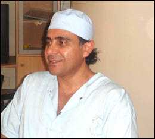

Fez's circumcision case
By Houcine Ait Mhand | Morocco TIMES 7/30/2006
|
|

Mohammed Kohen, a specialist surgeon in cancerology and digestive and visceral diseases. Ph: Archives |
Mohammed Kohen, a specialist surgeon in cancerology and digestive and visceral diseases, declared that without a technical proof that a surgeon has committed a medical error, he is free from guilt.
“Any surgical operation is studied, well-thought, and then decided. The surgeon values the importance of his action and thinks of that before, during, and after the operation. He carries with him all the anxiety, along with a feeling of satisfaction: being at the service of his patients,” a surgeon from Fez told Morocco Times.
Asked about the possible complications of adult circumcision, Dr. Kohen, who is also president of the Moroccan Association for visceral surgery and chairman of the “Chirurgie Action” Association, said that the surgery becomes very risky when it comes to a patient of Privat's age. After the circumcision, the involuntary erection of the adult can result in a suture detachment and consequently a haemorrhage, he clarified.
http://www.cirp.org/news/moroccotimes2006-07-30/